Понять задачу
Тема, сбор информации, анализ аудитории, конкурентов и рынка.
Sleep / Цифровой сервис
Истории, музыка и звуки для спокойного завершения дня.
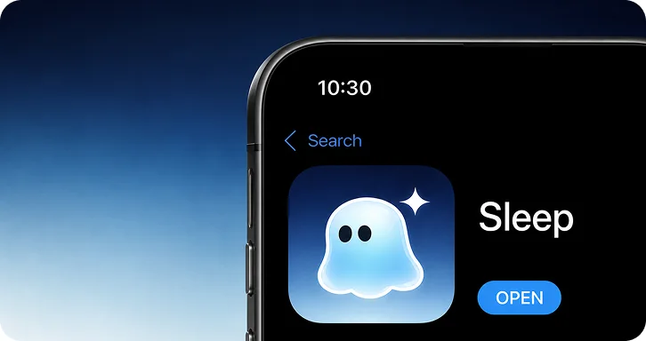
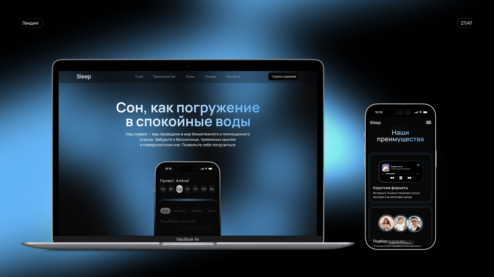
Задачи проекта
Спроектировать понятный сервис историй на ночь: от библиотеки контента до комфортного прослушивания и обратной связи.
Этапы работы / схема из проекта
Тема, сбор информации, анализ аудитории, конкурентов и рынка.
Структура сайта, референсы и прототип.
Дизайн, реализация в Tilda и согласование.
Трёхнедельная схема приведена в исходном описании проекта; точные календарные даты этапов не указаны.
01 / Контекст
В исходной концепции рассмотрены умственная перегрузка, сбитый режим, долгое укладывание детей и привычка включать экран перед сном. Исследование помогло сузить фокус до людей с насыщенной жизнью, которым трудно переключиться вечером.
Рабочие и учебные задачи продолжают прокручиваться после окончания дня.
Люди уже используют голос, музыку, истории и шумы как часть вечернего ритуала.
Нужен доступный формат, который легко включить без долгой подготовки.
02 / Исследование: вопрос → наблюдение → решение
До проектирования нужно было выяснить, в какой ситуации человеку трудно заснуть, что он уже делает и какое место новый сервис может занять в привычном вечере. Поэтому исследование сосредоточено на реальном опыте, а не только на реакции на идею Sleep.
В материалах есть гайд вопросов, таблица ответов и сопоставление с исходными гипотезами. Вопросы охватывают распорядок дня, стресс, последний сложный вечер, привычки и уже испробованные способы.
Ответы помогают уточнить проблему и требования к сценарию. Они не измеряют влияние Sleep на сон: продукт в этом исследовании ещё не сравнивали с альтернативами.
«Расскажите о своём типичном дне. Как вы его проводите?»
«Есть ли у вас какие-то постоянные ритуалы перед сном?»
Выясняем нагрузку, вечернюю ситуацию и место будущего ритуала.«Когда вы долго не можете заснуть, о чём вы думаете или что чувствуете?»
Отделяем собственные объяснения участников от первоначальных предположений команды.«Когда в последний раз не могли уснуть? Что вы тогда делали?»
«Какие методы, приложения или устройства вы уже пробовали, чтобы улучшить свой сон?»
Ищем существующие решения и причины, по которым они остаются в привычке.Вопросы приведены из гайда проекта. В таблице на слайде видны ответы Сергея, 23, и Дарьи, 22; по фрагменту нельзя установить полный размер выборки. Даты, рекрутинг и формат проведения отдельно не описаны.
Предполагали, что ключевой барьер — тревожные мысли и стресс. В выводах исследования выделены прокручивание задач и эмоциональное напряжение.
«…из-за моих мыслей, из-за того, что они крутятся и вообще невозможно с ними уснуть».Фрагмент ответа из слайда «Инсайты».
Сместить ценность к переключению внимания и понятному вечернему действию. Это основание для концепции, а не вывод о причинах нарушений сна у всех людей.
Участники упоминают голос, музыку, сказки и монотонные звуки. Sleep может встроиться в существующее поведение, вместо того чтобы требовать совершенно новой привычки.
В таблице ответов встречаются аудиокниги и музыка; в инсайтах аудио описано как доступный способ переключиться.
Сделать аудио основным входом, дать простой выбор истории или звука и заметный переход к прослушиванию. Короткая длительность 5–15 минут — решение концепции, которое ещё нужно проверять.
Исходно предполагали, что люди почти не знают альтернатив лекарствам. Ответы показывают знакомство с разными способами, но без устойчивого и последовательного ритуала.
Нужно помочь начать и повторять простое действие, а не только рассказывать о существовании техник.
Сократить усилия до первого запуска контента, сделать выбор понятным и собирать обратную связь о том, что человек действительно использует.
На слайде результатов третья гипотеза отмечена крестиком, на слайде инсайтов — как частично подтверждённая. В кейсе она описана как пересмотренная. Частоты ответов и сравнительный тест аудио не представлены.
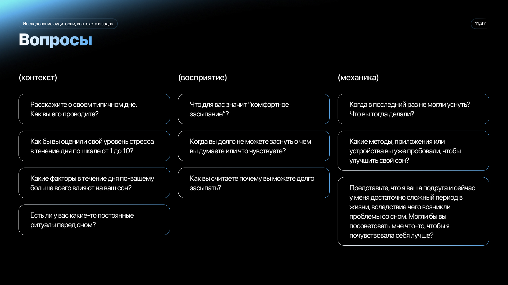
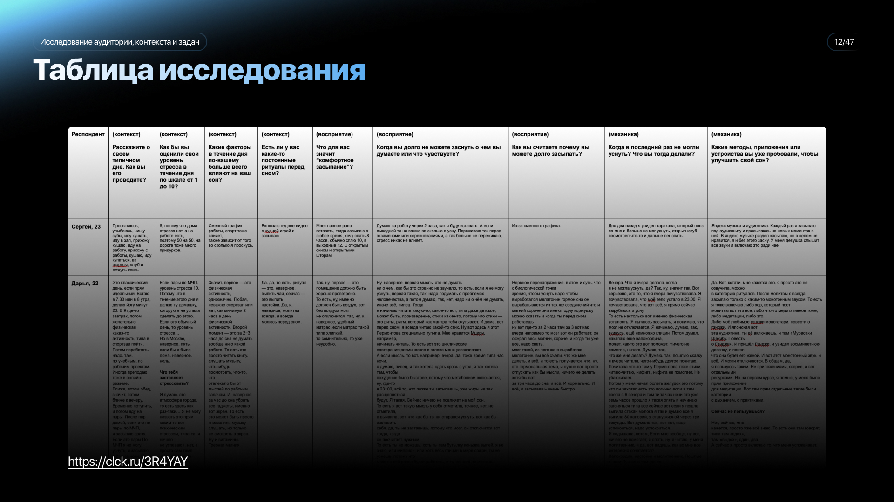
03 / Исследование изменило сегментацию
Работающие взрослые с высокой нагрузкой.
Студенты со сбитым режимом и учебным стрессом.
Часть младших респондентов работает и учится, обеспечивает себя и испытывает похожую перегрузку. В исследовании это стало основанием объединить близкие задачи.
Взрослые с насыщенной жизнью, которым вечером трудно прекратить прокручивать задачи и переключиться.
Когда мысли мешают расслабиться вечером, хочется быстро переключиться и снизить внутренний шум.
Сокращённая формулировка JTBD из презентации, не цитата респондента. Границы 20–35 — выбранный фокус концепции, а не статистически доказанный возрастной сегмент.
Начинать с ситуации и цели пользователя, а не только с возраста: что он хочет сделать сейчас, сколько времени готов выделить и какой формат предпочитает. Это связывает обновлённую аудиторию с подбором контента.
04 / Ценность
Концепция предлагает аудио по 5–15 минут, подбор под контекст и форматы для разных сценариев. Основной акцент — простой способ начать вечерний ритуал.
Низкий порог начала и понятная длительность прослушивания.
Идея персонализации учитывает возраст, настроение, длительность и ситуацию.
В исследовании сравнили Endel, Calm и Meditopia, а также привычные альтернативы: YouTube, аудиосервисы и помощники.
Сравнение пересказано по презентации; актуальные функции конкурентов отдельно не проверялись.
04.1 / От вывода к интерфейсу
Библиотека историй, музыки и звуков; понятный плеер и короткий путь к прослушиванию.
Простая навигация, подборки под цель и видимая длительность контента. Проверка: может ли человек без объяснений найти и включить подходящий материал?
Выбор по ситуации и задаче, а не только по возрасту. Проверка: понимает ли человек, какая подборка подходит ему сейчас?
Низкий порог повторного запуска. Проверка: возвращается ли человек и использует ли контент повторно?
Основания взяты из исследования; конкретные проверки ниже — предложенный следующий этап. Usability-тестирование этих решений в присланных материалах не описано.
05 / Дизайн
Минимализм, мягкие формы и спокойные голубые акценты. Вместо декоративной сложности — крупные изображения, простая навигация и пространство вокруг контента.
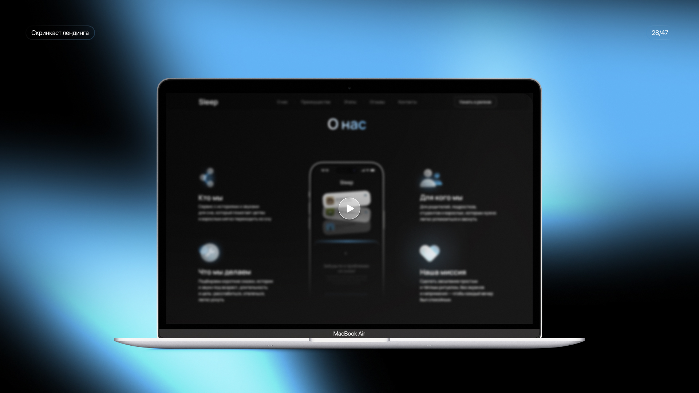
05.1 / Визуальная система в контексте
Мягкий персонаж, голубое свечение и пластичные формы переходят из цифрового интерфейса в фирменные носители. Мокапы показывают, как визуальная система работает в разных масштабах.
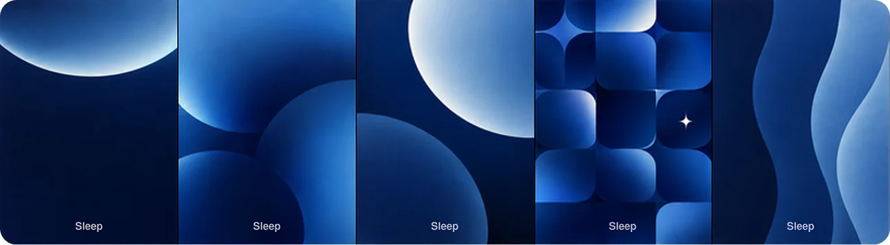
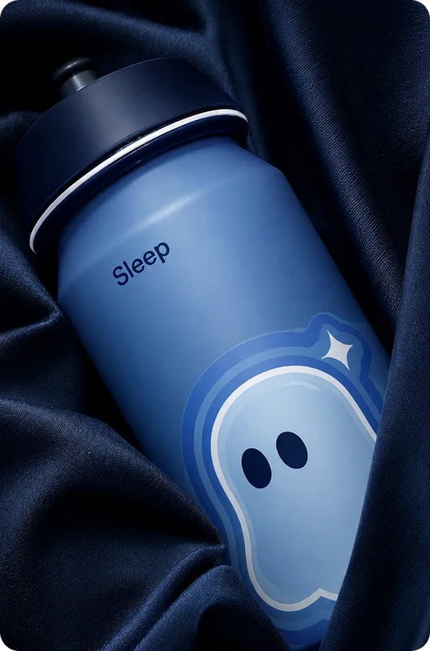
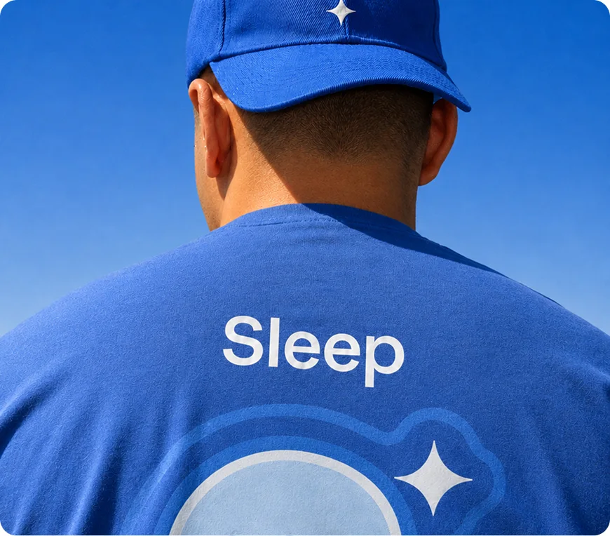
05.2 / Цифровые носители
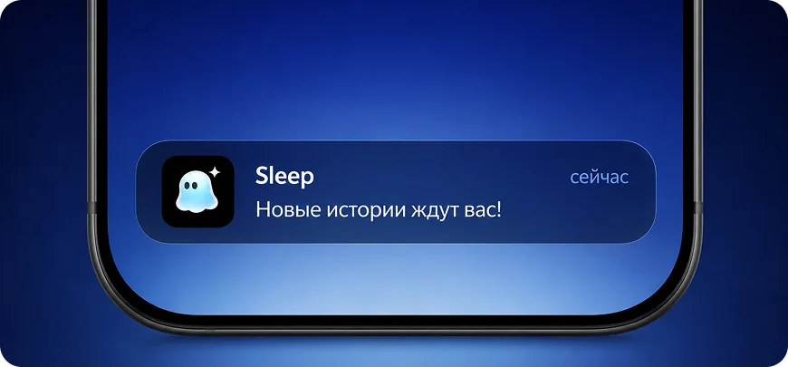
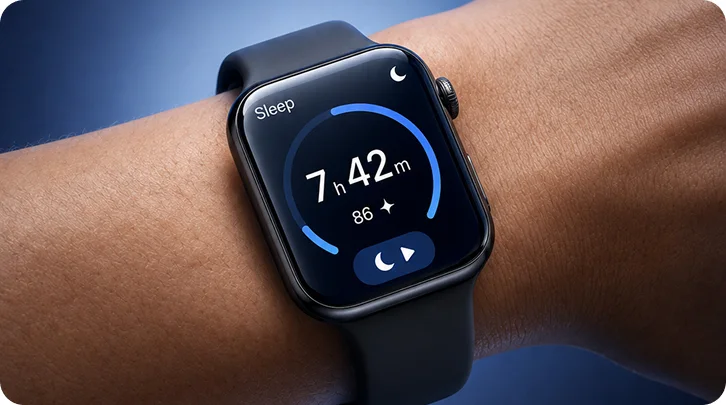
Мокапы иллюстрируют визуальное развитие бренда. Отдельное приложение для часов и работающие уведомления не представлены как результат запуска.
06 / Экосистема
Первый запуск построен вокруг лендинга и контентных каналов. Социальные площадки знакомят с идеей, сайт объясняет предложение и собирает контакты.
Короткий контент, аудиоформаты и знакомство с проектом.
Статьи о вечерних привычках и форматах сервиса.
Объяснение ценности и форма обратной связи.
07 / Проверка интереса
Воронка проекта разделяет знакомство с идеей, переход к ценности сервиса и заполнение формы. Продуктовые цели — запустить лендинг с формой, сообщество VK и Telegram-канал. Маркетинговые — 50 уникальных посетителей, 5 контактов и по 5 подписчиков в VK и Telegram.
Короткие материалы в соцсетях и статьи; отслеживание охватов и кликов.
Переход на лендинг и знакомство с преимуществами; оценка поведения на странице.
Оставление контакта через форму и подписка на канал.
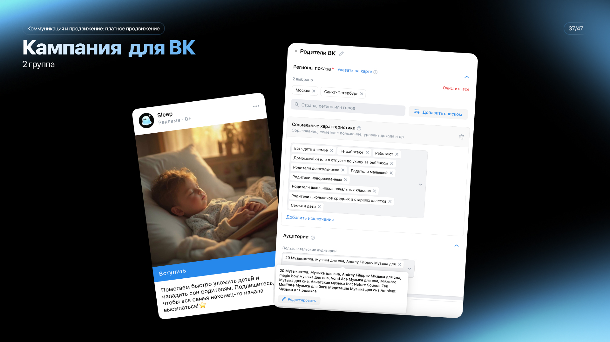
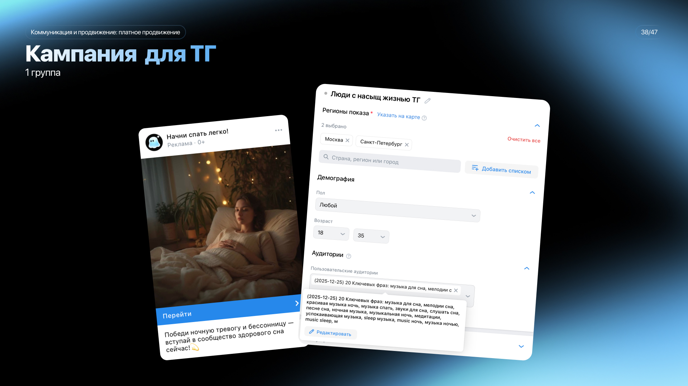
08 / Результаты
По итогам, приведённым в презентации, лендинг и каналы запущены. Результаты привлечения показали, что ценность и мотивация к следующему действию требуют доработки.
| Метрика | Цель | Результат |
|---|---|---|
| Уникальные посетители | 50 | 44 |
| Заполненные формы | 5 | 2 |
| Подписчики VK | 5 | 5 |
| Подписчики Telegram | 5 | 0 |
В этом тесте VK дал подписчиков, Telegram — нет. Нужны отдельные сообщения и креативы под канал.
В выводах проекта предложены понятная выгода и дополнительный повод оставить контакт.
Гипотеза о преимуществе ключевых фраз над интересами в презентации не подтверждена.
Показатели описывают первый запуск и интерес к концепции. Они не подтверждают улучшение сна или устойчивое использование сервиса.
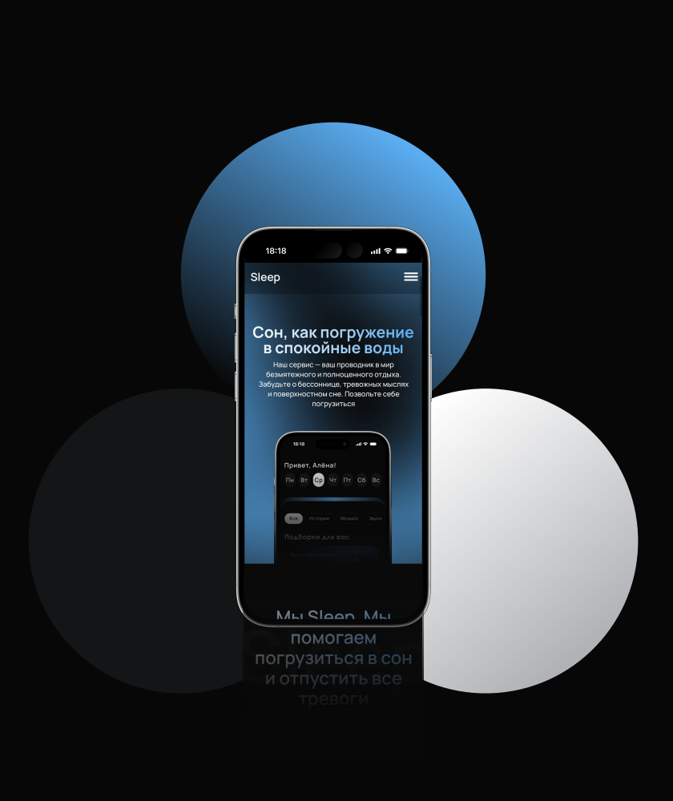
09 / Что тест объясняет — и что нет
Первый запуск проверял коммуникацию и готовность к действию на лендинге. Он не проверял качество сна после прослушивания и не даёт данных об устойчивом использовании Sleep.
В отчёте гипотеза об эффективности VK отмечена как подтверждённая. Это результат данного теста, а не универсальный вывод о площадках.
Адаптировать сообщение под каждый канал и сравнивать не только подписки, но и переходы к контенту при сопоставимых условиях.
В выводах проекта причина связывается с недостаточно ясной ценностью в рекламе и контенте. Это объяснение требует отдельной проверки.
Сравнить варианты первого экрана и объявлений с конкретным примером аудио. Отслеживать путь от перехода до запуска и фиксировать, где человек останавливается.
Команда предположила, что пользователям не хватило выгоды от оставления контакта. Два ответа — сигнал для доработки, но не объяснение мотивации сами по себе.
Понятно объяснить, что человек получит после формы, и проверить вариант с пробной историей. Измерять заполнения, ошибки формы и причины отказа.
Дать человеку выбрать материал для своего вечера. Наблюдать за действиями, временем до запуска и затруднениями.
Узнать, подходит ли голос, длительность и содержание. Отделять оценку контента от утверждений о влиянии на сон.
Проверить повторные запуски и причины возвращения. Критерии успеха задать до следующего теста.
Личная роль автора, состав команды и точные сроки CustDev пока не уточнены. Новые эксперименты описаны как план, а не выполненная работа.